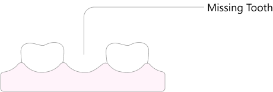

Bridges
Closing the Gaps
Bridges are fantastic in situation where the teeth adjacent to an empty tooth site needs crown reinforcement. This treatment will give new strength and beauty to the neighboring teeth as well as replace a missing tooth.
What to expect
At the appointment
-
 Duration 60-90 min
Duration 60-90 min -
 Oral
anesthetic use
Oral
anesthetic use -
 Possible minor sensitivity
Possible minor sensitivity -
 Tooth colored temporary or final
Tooth colored temporary or final
After Appoinment
-
Possible post operative sensitivity to temperature changes
-
 Avoid eating until numbness wears off.
Avoid eating until numbness wears off.
What it is
There are many ways to replace a missing tooth
Typically a bridge is used for
- Replacement of a missing tooth
- Esthetic or functional improvement of neighboring teeth
- Implant options are not viable
 
Pros
- Bridged teeth look uniform in shape and color

- Adds reinforcement to broken neighboring teeth
Cons
- May require cutting down perfectly healthy teeth
- Health of the bridge depends on health of both anchoring teeth
How it is accomplished
The teeth are built up is composite as necessary for future preparation
Built up teeth are prepared for a bridge
A temporary bridge made as a place holder

Later the temporary bridge is removed and a final is cemented in its place
Materials
- Zirconia Also known as zirconia based ceramics are the strongest ceramic materials available in dentistry today. The trade off of the material is that it is the least esthetic. Zirconia crowns always look flatter in color and do not have the depth and translucency that natural teeth display. This material is ideal for molar crowns in the back of the mouth.
- Metal-alloys Gold crowns fall into this category of materials. Historically this is the least esthetic material however it has been time tested and found to have the longest service life. In addition this material allows the restoration to be more conservative thereby saving more tooth structure. This material is ideal for teeth with low esthetic but high stress environments such as molar teeth on someone who has a clenching or grinding habit.